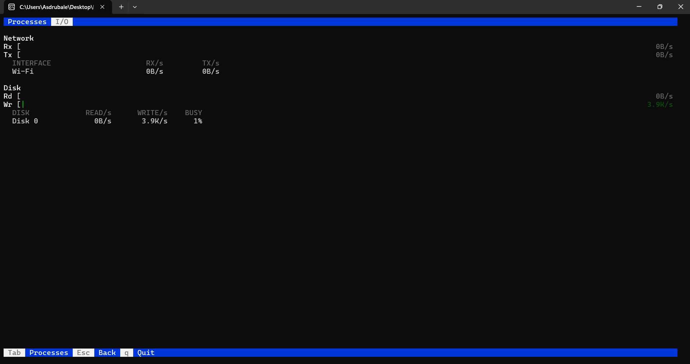

{kind=link}
F5 Tree view
See the parent and child hierarchy with connector glyphs, sorted under each parent. Filter inside the tree and the path to every match stays visible.
WindowsTerminal.exe
├─ OpenConsole.exe
└─ pwsh.exe
└─ wtop.exeWindows process viewer
A fast, keyboard and mouse driven process monitor for the Windows console. Per-core CPU meters, a sortable process table, tree view, and a live I/O tab.
> winget install Cingano.wtop
No package manager? Build it from source with one command.
wtop reads the whole process list from a single system call, so a refresh costs about a fifth of a percent of one core. Every view below is one keystroke away.
See the parent and child hierarchy with connector glyphs, sorted under each parent. Filter inside the tree and the path to every match stays visible.
WindowsTerminal.exe
├─ OpenConsole.exe
└─ pwsh.exe
└─ wtop.exeType a substring to narrow the list by name, case insensitive, updating live as you type. The summary line shows matched over total.
/chrome█
14 matched / 233 totalTag processes with Space, tracked by PID across refreshes. Then F9 ends the whole tagged set after a single confirmation.
▸ node.exe
▸ node.exe
python.exe
2 taggedEnd the selected process after a y or N confirmation. Run from an elevated console to terminate protected or elevated processes.
Kill process 7264
chrome.exe ? [y/N]█Tune the refresh interval, sort column and direction, per-core or combined meters, and tree mode. Settings persist between runs.
Refresh 1.5 s
Sort by CPU%
Meters per-core
Tree offClick a row to select, a header to sort, a tab to switch screens, a key-bar button to act, and scroll the wheel. Works on the classic console host too.
PID CPU% MEM THR
click a header to sort ↑↓One keystroke flips to the I/O tab: aggregate receive and transmit meters with a per-interface breakdown, and aggregate read and write meters with a per-drive breakdown including a busy percentage.

The fastest path on Windows 10 and 11.
> winget install Cingano.wtop
A C compiler is all you need. Tested with GCC from MSYS2 UCRT64.
> make
or compile directly
> gcc -O2 -Wall -Wextra -std=c11 src/*.c -o wtop.exe
Install for the current user, no admin rights. Open a new console and just type wtop.
> wtop --install
It copies into %APPDATA%\wtop and adds that folder to your per-user PATH. Remove it any time with wtop --uninstall.
The display refreshes every 1.5 seconds by default. Navigation works from the keyboard and the mouse at the same time.